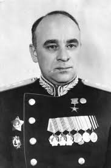
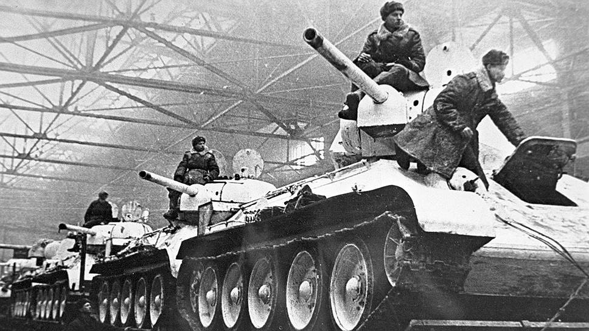
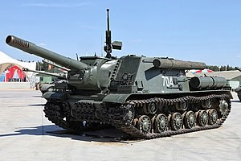
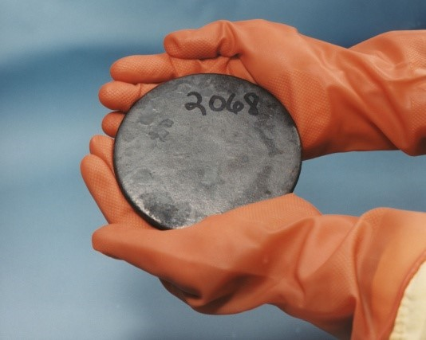
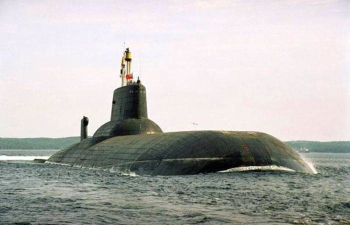
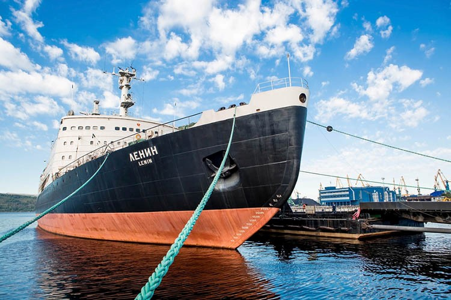
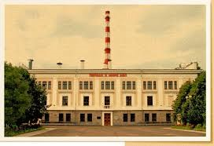
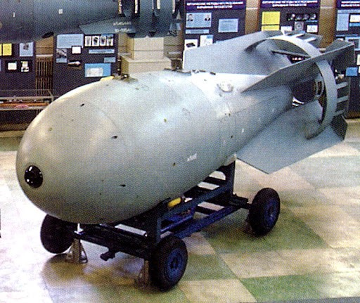

«Через два года мы скажем спасибо американцам, что они не давали нам оборудования и научили нас делать
своё собственное, отечественное»
Деятельность в танкостроении:
Вячеслав Малышев, «сталинский нарком», внес огромный вклад в советскую промышленность, особенно в
танкостроение. С началом войны его главной задачей стало обеспечение армии танками. Он руководил развитием
танкостроения на Урале, добился увеличения производства и улучшения качества танков Т-34, за что получил
прозвище «Суворов танковой промышленности». В 1942
году руководил эвакуацией танкового завода из
Сталинграда. Под его руководством советская танковая промышленность стала мировым лидером, выпустив за годы
войны более 100 тысяч танков и САУ. После войны занимал важные посты, в том числе в Министерстве
Транспортного машиностроения.


- «Танковый генерал»: За свой вклад в производство танков он получил прозвище “танковый генерал”, хотя и не был военным.
- Рекордные сроки: Под его руководством были достигнуты рекордные сроки разработки и внедрения новых моделей танков в серийное производство, что имело огромное значение для победы в войне.
- Строгий руководитель: Малышев был известен своим жёстким стилем руководства, требовательностью и умением мобилизовать коллектив на выполнение поставленных задач.
- Министр транспортного машиностроения: После войны занимал высокие посты в правительстве, в том числе был министром транспортного машиностроения.
Деятельность в атомном проекте:
Малышев участвовал в советском атомном проекте, организуя производство делящихся материалов и строительство
комбинатов на Урале и в Сибири. Он возглавлял секции по проектированию заводов по производству урана-235.
Будучи министром судостроительной промышленности (1950
-1952
), инициировал строительство первой советской
атомной подлодки. В 1953
году стал первым министром среднего машиностроения СССР, объединив атомную
промышленность и ПВО. При его участии был создан комбинат № 813 (УЭХК) для производства урана-235,
использованного во второй советской ядерной бомбе.

Развитие Атомного Флота (1950-1952):
С 1950
по 1952
год Малышев был министром судостроительной промышленности СССР. Он инициировал и организовал
работы по созданию атомного подводного флота СССР. В 1952
году было принято постановление о строительстве
первой советской подводной лодки с ядерной установкой.

Министерство Среднего Машиностроения (1953-1954):
29 июня 1953
года Малышев стал первым министром среднего машиностроения СССР, объединившего атомную
промышленность и разработку систем ПВО. Под его руководством создавался комбинат № 813 (УЭХК) по получению
урана-235, использованного во второй советской ядерной бомбе. Малышев расширял деятельность отрасли,
развивая атомную энергетику и флот. При его участии началось строительство Обнинской АЭС и атомного ледокола
“Ленин”. Малышев знакомил научных работников с достижениями военной техники, несмотря на секретность.


Испытания Термоядерного Оружия и Последствия (1953-1954):
Малышев был председателем Госкомиссии по испытанию первой отечественной термоядерной бомбы РДС-6с (12
августа 1953 года
). Он побывал в эпицентре взрыва, что, вероятно, повлияло на его здоровье. В 1954
году
Малышев стал заместителем председателя Совета Министров СССР, оставаясь министром среднего машиностроения.
